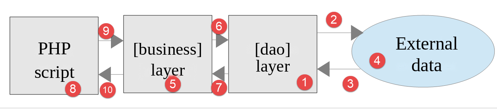

10. Anwendungen in Schichten
10.1. Einführung
Die Skripte dieses Kapitels befinden sich im Ordner [scripts-console/three-layers]:
Wir untersuchen nun, wie sich eine PHP-Anwendung in Schichten strukturieren lässt:

In diesem Diagramm stößt die linke Schicht die Verwendung der rechten Schicht an. Die Schichten haben folgende Aufgaben:
- [1]: Die Schicht [dao] (Data Access Objects) übernimmt die Interaktionen mit externen Datenspeichern [4] (Dateien, Datenbanken, Webservices usw.). Diese Schicht wird manchmal auch als [DAL] (Data Access Layer) bezeichnet, ein Begriff, der ihre Rolle besser beschreibt. Diese Schicht kann Daten aus [3] lesen oder in [2] schreiben. Sie wird von der Schicht [business] [6] aufgerufen und liefert ihr Ergebnisse [7] zurück;
- [5]: eine Schicht namens [business] , die „fachliche“ Prozeduren zusammenfasst und mit allen Daten versorgt wird, die diese benötigen. Dies ist in der Regel die stabilste Schicht eines Projekts, da sie nicht davon abhängt, wie die Daten beschafft werden. Die Daten stammen aus zwei Quellen:
- [9]: vom PHP-Skript bereitgestellte Daten;
- [6, 7]: bei der Schicht [dao] angeforderte Daten;
- [8]: Das Hauptskript fungiert als Orchestrator. In einer Konsolenanwendung wird es:
- die Schichten [business] und [dao] erzeugen;
- den Algorithmus der Anwendung ausführen. Dieser Algorithmus arbeitet wie ein Orchestrator: Er enthält weder „Geschäftslogik“ noch Code für den Datenzugriff. Das Hauptskript ruft lediglich die Prozeduren der Schicht [business] [9] auf. Die Schicht [dao] und die externen Daten sind ihm völlig unbekannt. Es kann der Schicht [business] Daten [9] liefern. In einer Konsolenanwendung können diese Daten aus Konfigurationsdateien oder vom Benutzer des Skripts stammen. Es erhält Ergebnisse [10] von der Schicht [business]. Möglicherweise muss es bestimmte Ergebnisse speichern: Dazu verwendet es erneut die Prozeduren der Schicht [business], die ihrerseits die Schicht [dao] aufruft, um die Aufgabe auszuführen;
- Unter den Ergebnissen kann das Hauptskript Ausnahmen erhalten. Es ist Aufgabe des Hauptskripts, die Ausnahmen zu behandeln, die aus allen Schichten nach oben weitergereicht werden.
Diese Schichtenarchitektur soll die Weiterentwicklung der Anwendung erleichtern. Dazu implementiert jede Schicht eine Schnittstelle. Angenommen:
- die Schicht [dao] wird durch eine Klasse [Dao] implementiert, die eine Schnittstelle [IDao] implementiert;
- die Schicht [business] wird durch eine Klasse [Business] implementiert, die eine Schnittstelle [IBusiness] implementiert.
Die Prozeduren der Schicht [business] verwenden dann die Schnittstelle [IDao] statt der Klasse [Dao]. So kann die Schicht [dao] aktualisiert werden, ohne die Schicht [business] zu beeinträchtigen. Angenommen, in Version 1 verwendet die Schicht [Dao1] Daten aus einer Datenbank. Nach einer Aktualisierung werden diese Daten in Version 2 von einem Webservice geliefert, [Dao2]. Wir sorgen dafür, dass beide Klassen, [Dao1] und [Dao2], dieselbe Schnittstelle [IDao] implementieren und dieselben Ausnahmen auslösen. Ist das gewährleistet, bleibt die [Business]-Schicht, die mit der Schnittstelle [IDao] arbeitet, unverändert.
Dieselbe Überlegung gilt für die Schicht [business].
Die Anwendung wird die folgende Schichtenstruktur umsetzen:

10.2. Zwischen den Schichten ausgetauschte Objekte
Normalerweise tauschen Schichten verschiedene Objekte aus. Hier tauschen sie Objekte der folgenden Klasse [Person] aus: [Person.php]:
Kommentare
- Zeile 6: Zwischen Schichten ausgetauschte Objekte enthalten nur Daten. Sie werden unveränderlich gemacht (Klasse [readonly]): So wird verhindert, dass eine Schicht versehentlich ein Objekt verändert, das sie von einer anderen Schicht erhalten hat;
- Zeile 9: Die Person hat nur ein Attribut, ihren Bezeichner [$id], der vom Konstruktor per Parameter-Promotion initialisiert wird. Wir nehmen an, dass dieser Bezeichner eine eindeutige Person in einem Datenspeicher bezeichnet;
- Zeilen 14–17: Die Methode [__toString], die den Bezeichner der Person anzeigt.
10.3. [dao]-Schicht
Die Schnittstelle [IDao], die von der Schicht [dao] implementiert wird, lautet wie folgt: [IDao.php]:
Diese Schnittstelle wird von der folgenden Klasse [Dao1] implementiert: [Dao1.php]:
Kommentare
- Zeile 5: Die Klasse [Dao1] implementiert die Schnittstelle [IDao]. Sie ist als [final] deklariert: Sie ist nicht zum Ableiten gedacht;
- die Klasse interagiert nicht mit einem Datenspeicher. Sie zeigt lediglich Meldungen an, um die Ausführung des Codes nachzuverfolgen (Zeile 11, Zeile 18);
- Zeile 8: Das Attribut [#[\Override]] zeigt an, dass die Methode eine Methode der Schnittstelle implementiert. Ist der Methodenname falsch, meldet PHP dies;
- Zeile 19: Wir geben tatsächlich eine Person mit der Kennung zurück, die der Methode als Parameter übergeben wurde.
Wir implementieren die Schnittstelle [IDao] außerdem mit der folgenden Klasse [Dao2], [Dao2.php]:
Die Klasse [Dao2] ähnelt der Klasse [Dao1], nur dass wir die angezeigten Meldungen geändert haben.
10.4. Schicht [business]
Die Schicht [business] stellt die folgende Schnittstelle [IBusiness] bereit: [IBusiness.php]:
Kommentare
- Zeile 6: Die Schnittstelle [IBusiness] erweitert die Schnittstelle [IDao]. Das ist keineswegs erforderlich. Wir tun es hier, weil das Beispiel einfach ist: Die Schicht [business] stellt dem Hauptskript die Methoden [get] und [save] der Schicht [dao] bereit, die sie vor dem Hauptskript verbirgt;
- Zeile 9: Die Methode [doSomething] ist spezifisch für die Schicht [business].
Im PHP-7-Kurs war von der Schnittstelle [IMétier] und der Klasse [Métier] mit Akzent die Rede. PHP erlaubt Buchstaben mit Akzent in Bezeichnern, aber eine Datei namens [Métier.php] verursacht bei bestimmten Werkzeugen Probleme (ZIP-Archive, Dateisysteme, automatisches Laden von Klassen). Wir verwenden nun Klassen- und Dateinamen ohne Akzente: hier [IBusiness] und [Business].
Die Schnittstelle [IBusiness] wird von der folgenden Klasse implementiert: [Business] [Business.php]:
Kommentare
- Zeile 8: Die Schicht [business] muss eine Referenz auf die Schicht [dao] besitzen, um deren Methoden verwenden zu können. Diese Referenz wird ihr über ihren Konstruktor übergeben und im privaten, schreibgeschützten Attribut [$dao] gespeichert (Parameter-Promotion). Beachten Sie, dass der Parametertyp die Schnittstelle [IDao] ist. Damit kann die Schicht [business] mit jeder Klasse arbeiten, die die Schnittstelle [IDao] implementiert. Wechseln wir von einer Schicht [Dao1] zu einer Schicht [Dao2] und implementieren beide die Schnittstelle [IDao], muss die Schicht [business] nicht neu geschrieben werden;
- Diese Technik heißt Dependency Injection über den Konstruktor: Die Klasse [Business] erzeugt die Schicht [dao], von der sie abhängt, nicht selbst; stattdessen wird sie ihr übergeben. Der PHP-7-Kurs verwendete einen Setter [setDao]. Die Konstruktorinjektion ist heute der Standard: Ein [Business]-Objekt kann nicht ohne seine Schicht [dao] existieren, und diese Schicht lässt sich danach nicht mehr ändern (Attribut [readonly]). Dieselbe Vorgehensweise verfolgen auch Frameworks wie Symfony oder Laravel;
- Zeilen 14–18: Implementierung von [IBusiness::doSomething];
- Zeilen 22–27: Implementierung von [IBusiness::save]. Diese Methode muss eine Person in einem Datenspeicher sichern. Die Schicht [business] kann das nicht. Sie beauftragt die Schicht [dao] mit dieser Speicherung (Zeile 26);
- Zeilen 31–36: Implementierung von [IBusiness::get]. Diese Methode muss aus einem Datenspeicher die Person abrufen, deren Kennung ihr als Parameter übergeben wird. Die Schicht [business] kann das nicht. Sie beauftragt die Schicht [dao] mit dieser Aufgabe (Zeile 35).
Fazit: Immer wenn die Schicht [business] auf Daten zugreifen muss, die im Datenspeicher abgelegt sind, muss sie den Weg über die Schicht [dao] nehmen, die eigens für den Zugriff auf diese Daten geschaffen wurde.
10.5. Das Hauptskript
Wir schreiben zwei Orchestrierungsskripte für diese Anwendung. Das erste, [main1.php], verwendet die Schicht [Dao1], das zweite, [main2.php], die Schicht [Dao2]. Wir wollen zeigen, dass dies keine Auswirkungen auf den Code der [Business]-Schicht hat.
Das Skript [main1.php] lautet wie folgt:
Kommentare
- Das Skript [main1.php] fungiert als Orchestrator der Anwendung. Es lädt die Klassen- und Schnittstellendateien (Zeilen 7–11), erzeugt die Schichtenstruktur der Anwendung (Zeile 14) und kommuniziert anschließend mit der Schicht [business] (Zeilen 16–18);
- Zeile 14: Hier, und nur hier, wird die Implementierung der Schicht [dao] ausgewählt;
- Gemäß dem Diagramm der Schichtenstruktur darf das Skript [main1.php] nur mit der Schicht [business] kommunizieren. Es darf nicht mit der Schicht [dao] kommunizieren, auch wenn dies theoretisch möglich ist.
Die Ergebnisse der Ausführung lauten wie folgt:
Kommentare
- Zeile 16 des Codes hat das Schreiben der Zeilen 2 und 3 der Ergebnisse veranlasst;
- Zeile 17 des Codes hat das Schreiben von Zeile 4 der Ergebnisse veranlasst;
- Zeile 18 des Codes hat das Schreiben der Zeilen 5 und 6 der Ergebnisse veranlasst.
Das Skript [main2.php] lautet wie folgt:
Kommentare
- Zeilen 10 und 14: Die Schichtenstruktur verwendet nun die Schicht [Dao2]. Das sind die einzigen Unterschiede zu [main1.php].
Die Ergebnisse der Ausführung lauten wie folgt:
Die Schicht [Dao1] simuliert den Zugriff auf eine lokale Datenbank, die Schicht [Dao2] den Zugriff auf eine entfernte Datenbank. Solange diese beiden Schichten der Schnittstelle [IDao] entsprechen, sehen wir, dass der Code der [Business]-Schicht nicht geändert werden musste.
Wir wenden das soeben Gelernte auf die Übung zur Steuerberechnung an, die uns als roter Faden dient.